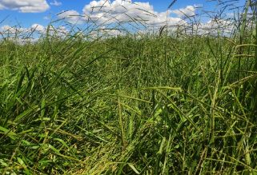
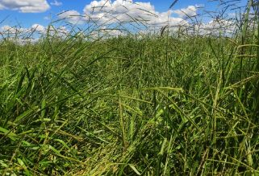
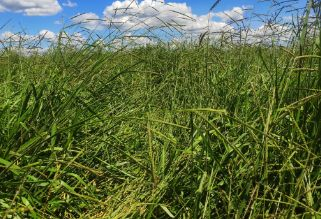

Sua maior tolerância à cigarrinha-das-pastagens e a seca, aliado a semelhança botânica com as outras brizanthas, posicionam o capim Piatã como nova alternativa para o produtor. Na agricultura, vem crescendo muito seu posicionamento em áreas de integração.
Benefícios e Considerações
Com florescimento precoce, em janeiro e fevereiro, na época seca ela preserva sua
qualidade pelo fato de ter esse florescimento precoce.
O Capim-Piatã apresenta resistência às cigarrinhas típicas de pastagens, Notozulia entreriana e Deois
flavopicta, por determinar menor sobrevivência ninfal quando comparado a cultivares susceptível, como a
Brachiaria decumbens.
O cv. BRS Piatã destaca-se pelo elevado valor nutritivo (9-10% de Proteína e 60% de Digestibilidade),
taxa de crescimento e rebrota. Ele tolera um pouco mais áreas alagadas como as que causam a morte súbita
do Braquiarão (Marandu), mas não pode ser considerada tolerante, não é recomendado utilizar essa cultivar
por substituição por morte.
O Capim-Piatã é uma boa alternativa para uso em piquete maternidade, desmama de bezerros, por ter
talos mais finos e uma melhor morfologia nos casos em que necessita de uma pastagem de melhor qualidade,
para solos de média fertilidade.
O uso do Piatã em sistemas de integração lavoura-pecuária também vem sendo indicado pelo acúmulo de forragem no período seco, após a colheita da cultura principal. Sistema radicular extremamente agressivo o que nos garante descompactação física e ciclagem de nutrientes em profundidades onde outros cultivares não alcançariam. Porém deve-se atentar ao fato de essa cultivar precisar de doses maiores de glifosato para dessecação quando comparada à B. Ruziziensis.
Informações Técnicas
 
